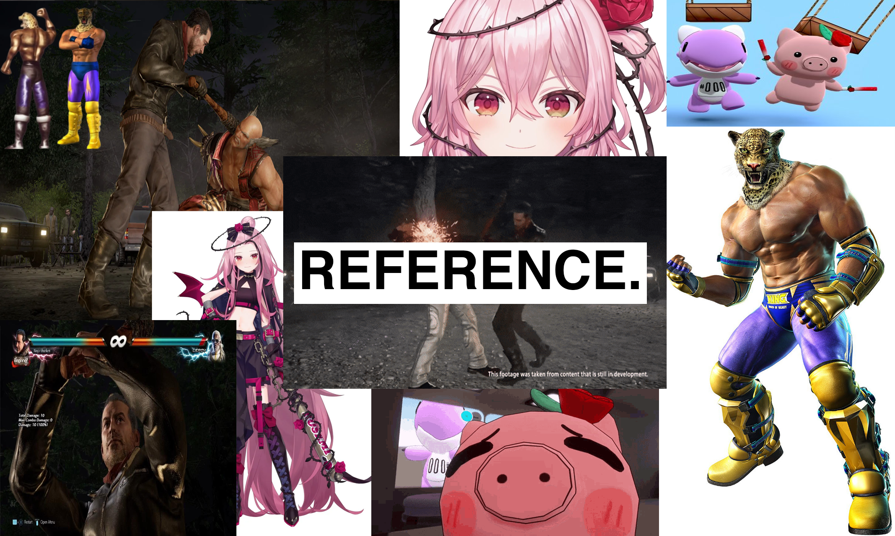
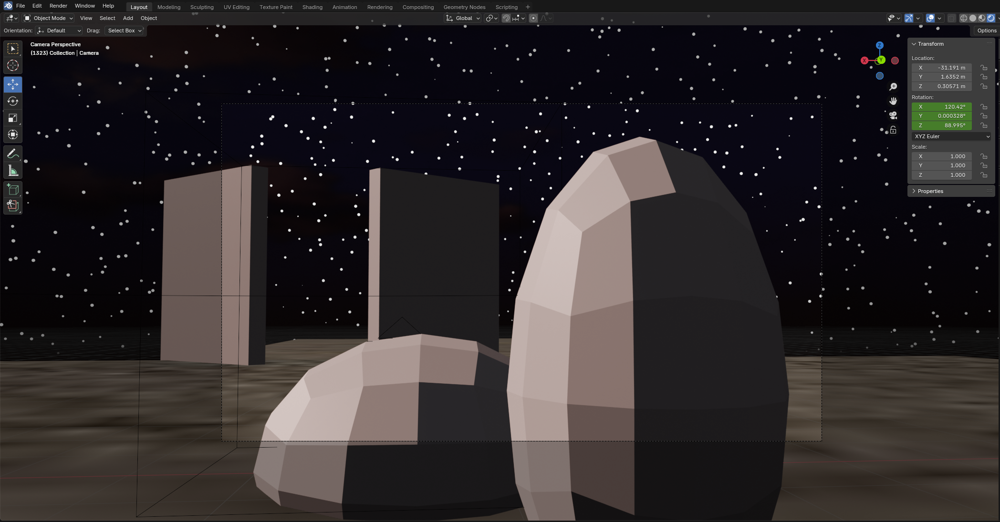
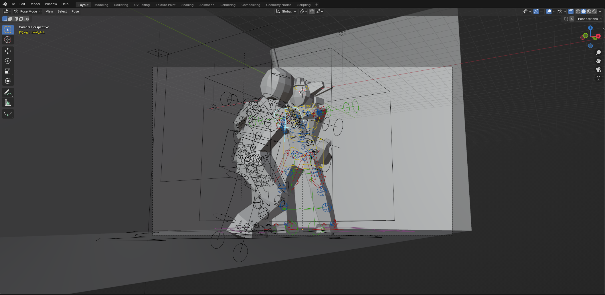
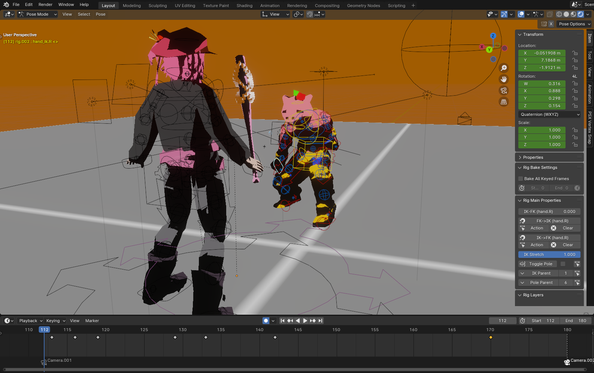
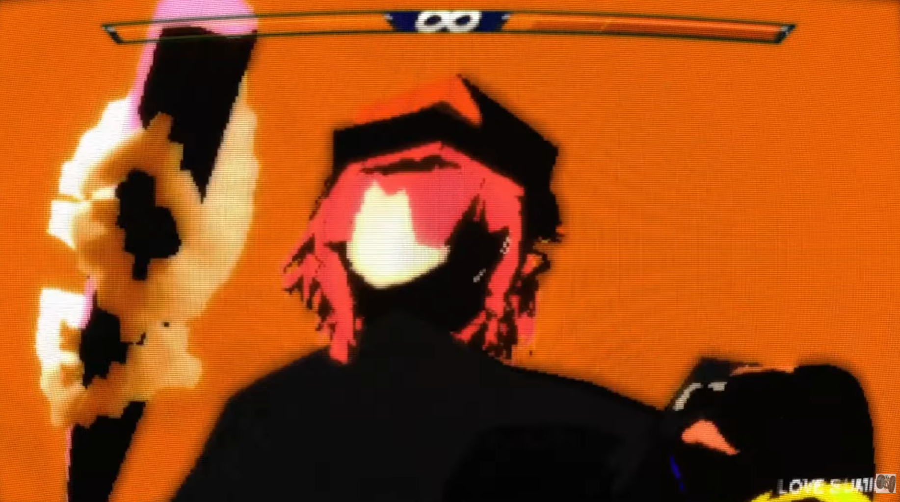
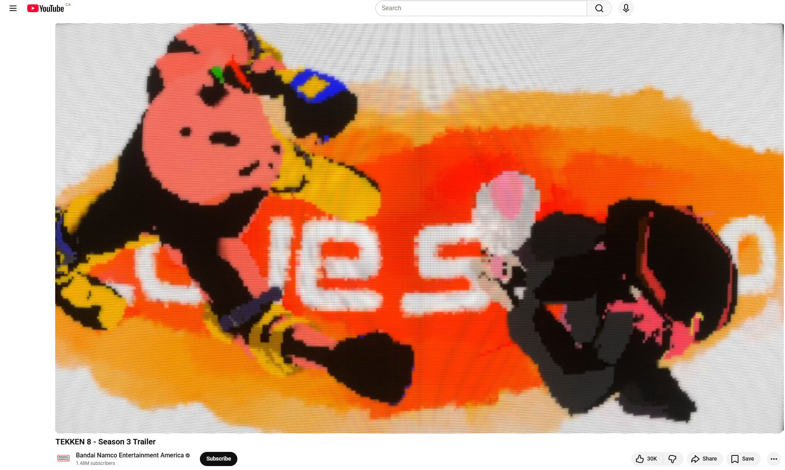

FINAL CUT

REFERENCE / MOOD BOARD

ANIMATION BLOCK ITERATION

ANIMATION ROUGH POSES

ANIMATION ROUGH POSES

POST PROCCESSING AND COLOR GRADING

APPLICATION - AS OFFICIAL TRAILER ANIMATION
ROSEMI FANIMATION
PROJECT DETAILS
This animation project was a love letter to some of my favorite interests at the time, Tekken and a Vtuber named Rosemi, who is largely recognized as a big fan of the series as well as one of the creator’s favorite streamers (Vtubers being streamers that use virtual avatars rather than real faces). At the time, Tekken 8 was recently announced, and I wanted to take the time to create a special animation aimed at capturing the fun and often surreal nature of both Tekken and Rosemi, as there were special event streams regarding both of them.
Problems & Solutions: Here, I would put my modelling and animation skills to the test as I had very little experience in both practices. To first solve the question of what would happen and who is who, I took time searching through several VODS to see what Rosemi’s favorite characters were and took into consideration the theme of her mascot design as well as her interests. This led to the absurd creation of Rosemi being Neegan from The Walking Dead fighting her mascot, who I cleverly decided to design as King (an already animal headed wrestler) and quickly modelled from there. In terms of animation, I took the time to reference character designs and move animations firsthand in-game and would slow down the footage to go frame-by-frame and try to match the key poses via Blender (3D software). This helped greatly as I was able to accurately convey the moves found in-game without needing a team of hundreds of animators!
ROLES: Creative Director, 3D Modeller, Animator, Editor.
CREDITS: Christopher San Juan